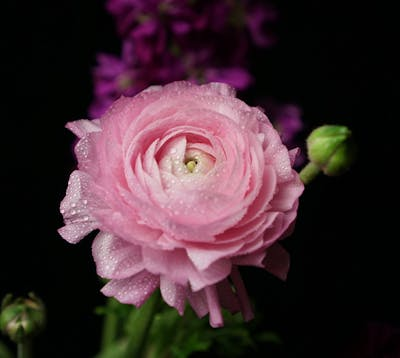

🌹 玫瑰
Rosa rugosa - 爱情与美丽的象征


📋 基本信息
学名：
Rosa rugosa
科属：
蔷薇科蔷薇属
原产地：
中国
花期：
5-9月（盛花期6-7月）
花语：
爱情、美丽、热情、勇敢
株高：
1-2米
🎨 主要品种
红玫瑰
热情真爱
代表：卡罗拉粉玫瑰
温柔感动
代表：戴安娜白玫瑰
纯洁天真
代表：坦尼克黄玫瑰
友谊祝福
代表：金香玉🌱 养护要点
☀️ 光照：
每天6-8小时直射光
💧 浇水：
见干见湿，春秋3-5天一次
🌿 土壤：
疏松肥沃微酸性(pH 6.0-6.5)
🌡️ 温度：
适宜15-25°C，耐-15°C低温
🍃 施肥：
生长期每2周施玫瑰专用肥
✂️ 修剪：
花后及时修剪，冬季重剪塑形
💡 专业养护技巧
• 浇水时避免淋湿叶片，防止黑斑病
• 春季萌芽前施足基肥，促进花芽分化
• 夏季注意通风，预防白粉病
• 秋季适当控水，增强抗寒能力
🍂 季节养护指南
🌸 春季
• 解除防寒措施
• 施催芽肥
• 修剪枯枝
• 预防蚜虫
☀️ 夏季
• 早晚浇水
• 遮阴防晒
• 花后修剪
• 防治红蜘蛛
🍁 秋季
• 施越冬肥
• 减少浇水
• 整理株形
• 准备过冬
❄️ 冬季
• 重剪塑形
• 根部培土
• 停止施肥
• 防寒保暖
🐛 常见病虫害防治
黑斑病：
及时摘除病叶，喷洒多菌灵
白粉病：
加强通风，喷洒硫磺粉
蚜虫：
人工捕捉或喷洒肥皂水
红蜘蛛：
增加湿度，喷洒阿维菌素
📚 文化意义
红玫瑰：
热烈的爱情，求婚、纪念日首选
粉玫瑰：
初恋的甜蜜，适合表白和初恋
白玫瑰：
纯洁的爱，婚礼和纯真感情的象征
黄玫瑰：
友谊的祝福，道歉和祝福友人